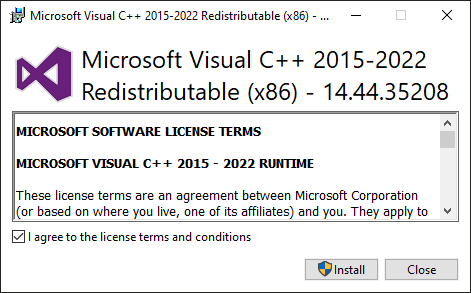
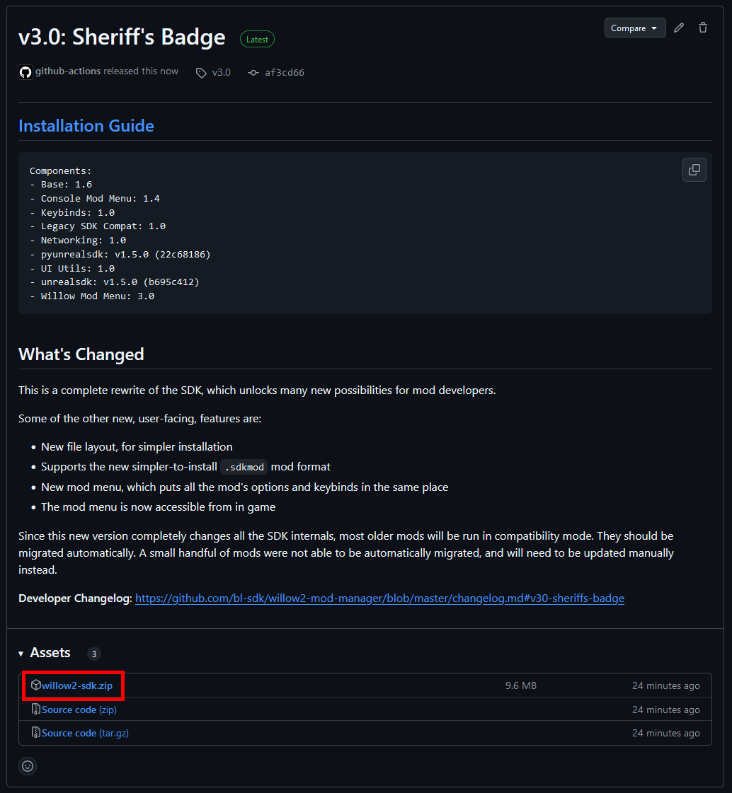
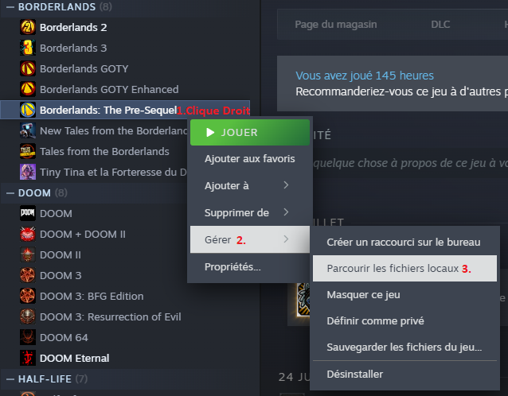
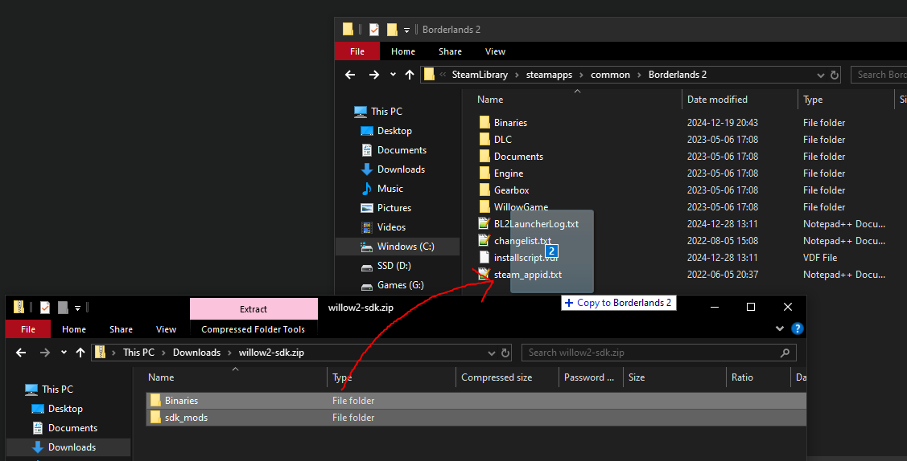
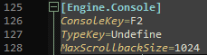

Mon parcours et mes notes pour pouvoir modder Borderlands The Pre-Sequel
1) Installer le python SDK
Il suffit de suivre les étapes d'ici : https://bl-sdk.github.io/willow2-mod-db/
Guide vidéo
Guide écrit
a) Installer la dernière version de Microsoft Visual C++ Redistributable

Si vous êtes sous Proton, vous pouvez installer vcrun2022 en utilisant protontricks
b) Télécharger la dernière version sur Github

Il ne faut pas télécharger les deux liens code source !
c) Localiser les fichiers du jeu
Steam par défaut:C:\Program Files (x86)\Steam\steamapps\common\BorderlandsC:\Program Files\Epic Games\Borderlands
d) Ouvrir le fichier zip téléchargé et l'extraire directement dans le dossier du jeu

S'il est demandé d'écraser des fichiers existant : acceptez.
[PROTON ONLY] Lorsque l'on joue sur Linux via Proton,il faut rajouter ceci comme argument pour démarrer:
WINEDLLOVERRIDES="ddraw=n,b" %command%L'installation est terminée !
2) Activer la console
Pour activer la console il faut dédier une touche à l'ouverture de la console. Voilà le fichier à modifier
C:\Users\User\Documents\My Games\Borderlands The Pre-Sequel\WillowGame\Config\WillowInput.iniConsoleKey=UndefineConsoleKey=F2
J'ai essayé avec F1 mais le jeu plantait.